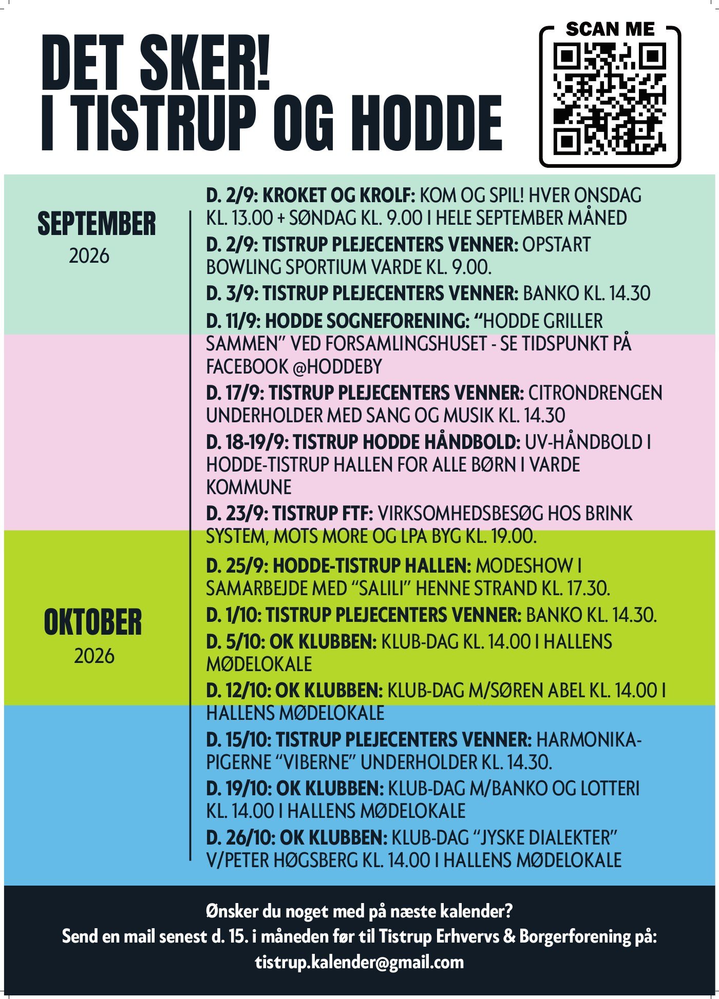

Byens kalender.
Kalender
Rul kalenderen til siden, eller vælg Uge for mere plads.
Henter arrangementer…
Arrangementer fra foreningerne, Tistrup Nyt og Pulsen i Vest. Kontrollér altid oplysningerne hos arrangøren.

Kalenderen på papirTil køleskabet og byens opslagstavler.Se fysisk kalender
Vælg en udgave, du vil se eller printe.
September–oktober 2026 · PDF ↗